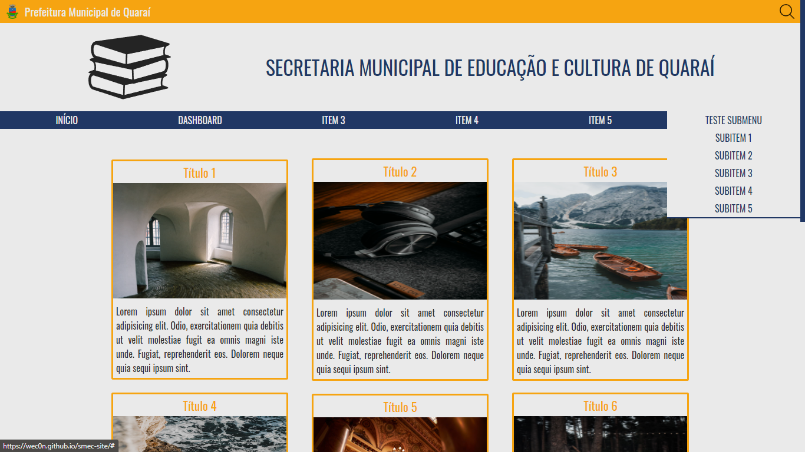

Projetos
Site Institucional
Acessar... Site institucional de uma Secretaria Municipal de Educação e Cultura.
Saiba Mais...Sobre
Gestor Financeiro pela Universidade Paulista (UNIP) e, atualmente, cursando Matemática na Universidade Federal de Pelotas (UfPel).
Desenvolvedor Web front-end.
Estudos de back-end em andamento com as linguagens PHP e C#.